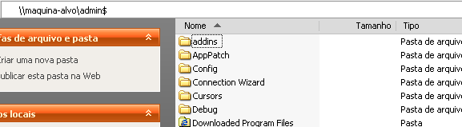

- Não Manifesto
- O que acontece com um programador com pressa
- Impressões do quinto encontro de CCPP
- Como usar WTL com o ATL do DDK
- A Alça Dentro do Fio Gerou um Bloqueio da Morte
- Como funciona o PsExec
# Não Manifesto
Caloni, 2008-10-01 <quotes> <self> <now> [up] [copy]É possível ficar consciente do Não Manifesto em todas as ocasiões.
É da Fonte que retiramos a energia vital (“Nem só de pão vive o homem”).
O Não Manifesto não nos liberta a menos que sejamos capazes de chegar a ele de modo consciente (“Conheceremos a verdade, e a verdade nos libertará”).
A paralisação do pensamento é um portal para o Não Manifesto.
A entrega é um portal para o Não Manifesto.
Tolle, Eckhart (O Poder do Agora, 1997)
# O que acontece com um programador com pressa
Caloni, 2008-10-05 [up] [copy]Eu já sabia, mas é lógico que não ia falar.
Há um tempo atrás um rapaz me pediu para responder uma série de questões sobre a carreira de programador C++. Era um rapaz empolgado com a idéia de aprender a linguagem em seis meses, com um roteiro, cronograma e um blogue recém-criados.
Como quase toda uma geração do imediatismo, aconteceu o inevitável: o blogue já não é atualizado há quase dois meses e toda aquela empolgação do começo deve ter virado fumaça assim que a pessoa vira a esquina e aparece uma coisa nova para fazer. E daí surgem as desculpas, o blá-blá-blá de todos aqueles que nunca têm tempo.
Eu sou um deles, mas de vez em quando atualizo esse meu espacinho =)
Na experiência de vida que tenho com todas aquelas idéias mirabolantes que as pessoas possuem de fazer alguma coisa, seja um software, aprender algo novo, ou até criar uma rotina qualquer, eu diria que quase todas, se não todas, falharam.
É natural que no começo, quando a idéia brota, e mais idéias formentam a idéia original, o empolgamento nos dá a falsa impressão que podemos fazer isso facilmente, e que é só planejar, ter vontade e ir em frente que conseguimos. É claro que toda essa impressão muda com o passar do tempo, principalmente para aquelas pessoas que possuem muitas idéias em muito pouco tempo, algo que acontece bastante com programadores, mas que em geral afeta todo mundo.
Em se tratando de software, a primeira coisa que deve ser feita, sempre, é planejar as tarefas visíveis a serem feitas para esboçar um panorama possível para o futuro do projeto. Eu disse possível no sentido de realizável.
O segundo passo é esquecer esse negócio de realizável, cair na real e encarar os fatos: o mundo não é perfeito. Comece a colocar defeitos no cronograma, tentar imaginar o que vai sair errado e, principalmente, conhecer você mesmo e as pessoas envolvidas para ter a real expectativa do que pode ser feito em quanto tempo.
Após jogar água fria o suficiente (às vezes são necessários muitos baldes) sobre suas idéias novas e excitantes, temos um panorama um pouco mais preciso, mais realista e, agora sim, passível de ser feito e acontecer de verdade.
Só que ainda não acabou.
É claro que isso tudo é o começo do projeto. Após a primeira semana, o primeiro mês, o segundo mês e o segundo semestre as atividades devem ser revistas e reprojetadas. Mais uma vez entra a regrinha da água fria. Não é porque deu errado no começo que não pode dar mais errado ainda no final.
Esse pequeno chamado foi apenas um reforço do apelo que Rodrigo Strauss fez em nosso último encontro de C++. Nosso grupo precisa de mais pessoas que escrevam algo. Portanto, façam blogues, mas não os deixem desgarrados!
# Impressões do quinto encontro de CCPP
Caloni, 2008-10-07 <ccppbr> [up] [copy]Pois é, passou, acabou... e foi muito bom!
E dessa vez me abstenho de fazer os comentários de sempre, visto que já está rolando uma discussão muito produtiva sobre o resultado desse último encontro, opiniões que, sinceramente, já refletem os pensamentos de todos que participaram desse magnânimo encontro de usuários.
# Como usar WTL com o ATL do DDK
Caloni, 2008-10-15 <computer> [up] [copy]Eu simplemente não entendo a organização dos cabeçalhos e fontes dos SDKs da Microsoft. Houve uma vez em que o ATL era distribuído junto com o SDK, e dessa forma conseguíamos usar o WTL sem ônus. Porém, um belo dia, isso é retirado do pacote, para tristeza dos que já haviam convertido a biblioteca de janelas para fonte aberto.
No entanto, num belo dia, qual não foi minha surpresa ao notar umas pastinhas chamadas atl21, atl30 e atl71 dentro da distribuição do WDK (o finado DDK, renomeado sabe-se-lá-por-quê)? Pelo visto, tem alguém arrastando coisa errada pra onde não devia nos instaladores de Seattle. Esses estagiários!
O fato é que eles fizeram isso, e agora é possível ter o WTL mais novo compilado com o WDK. E nem é tão difícil assim.
A primeira coisa a fazer é obter o tal do WDK. Para variar um pouco, agora existe (existia) um processo de registro antes de obter acesso ao _download_, mais ou menos nos termos da Borland para baixar o C++ Builder ou Turbo Pascal ou o Developer Studio.
Aliás, para os que baixaram esses produtos gratuitos da Borland versão C++ e não funcionou em algumas máquinas, como foi o meu caso, está disponível para baixar uma versão mais nova; dessa vez não vi nenhum problema na compilação e depuração. Ainda.
Após instalado, em qualquer lugar da sua escolha, configure no seu Visual Studio o caminho de onde se encontra a pasta atl71 (ou a 30, ou a 21). Aproveite também para colocar a pasta do WTL e o diretório de LIBs:

Isso vai fazer com que pelo menos os exemplos que vêem com o WTL compilem.
No entanto, você verá o seguinte erro durante a compilação dos recursos:
------ Build started: Project: MTPad, Configuration: Debug Win32 ------ Compiling resources... Microsoft (R) Windows (R) Resource Compiler Version 6.0.5724.0 Copyright (C) Microsoft Corporation. All rights reserved. Linking... CVTRES : fatal error CVT1100: <font color="#ff0000">duplicate resource</font>. type:MANIFEST, name:1, language:0x0409 LINK : fatal error LNK1123: failure during conversion to COFF: file invalid or corrupt Build log was saved at "file://c:\Lng\WTL\Samples\MTPad\Debug\BuildLog.htm" MTPad - 2 error(s), 0 warning(s) ========== Build: 0 succeeded, 1 failed, 0 up-to-date, 0 skipped ==========
Para resolver esse problema, remova a inclusão do arquivo de manifesto no arquivo RC:
2 TEXTINCLUDE DISCARDABLE
BEGIN
"#include ""atlres.h""\r\n"
"\0"
END
<font color="#ff0000">3 TEXTINCLUDE DISCARDABLE
BEGIN
"CREATEPROCESS_MANIFEST_RESOURCE_ID RT_MANIFEST ""res\\\\MTPad.exe.manifest""\r\n"
"\0"
END</font>
#endif // APSTUDIO_INVOKED
...
#ifndef APSTUDIO_INVOKED
/////////////////////////////////////////////////////////////////////////////
//
// Generated from the TEXTINCLUDE 3 resource.
//
<font color="#ff0000">CREATEPROCESS_MANIFEST_RESOURCE_ID RT_MANIFEST "res\\MTPad.exe.manifest"</font>
/////////////////////////////////////////////////////////////////////////////
#endif // not APSTUDIO_INVOKED
Depois dessa alteração, deve ainda existir o seguinte erro de linquedição:
------ Build started: Project: MTPad, Configuration: Debug Win32 ------
Compiling resources...
Microsoft (R) Windows (R) Resource Compiler Version 6.0.5724.0
Copyright (C) Microsoft Corporation. All rights reserved.
Linking...
<font color="#ff0000">mtpad.obj : error LNK2019: unresolved external symbol
"void * __stdcall ATL::__AllocStdCallThunk(void)" (bla bla bla)
mtpad.obj : error LNK2019: unresolved external symbol
"void __stdcall ATL::__FreeStdCallThunk(void *)" (bla bla bla)
</font>.\Debug/MTPad.exe : fatal error LNK1120: 2 unresolved externals
Build log was saved at "file://c:\Lng\WTL\Samples\MTPad\Debug\BuildLog.htm"
MTPad - 3 error(s), 0 warning(s)
========== Build: 0 succeeded, 1 failed, 0 up-to-date, 0 skipped ==========
Esse problema ocorre porque as funções de alocação e desalocação de memória da ATL estão em outra LIB que os exemplos da WTL desconhecem. Para resolver, basta incluir essa nova dependência:
#pragma comment(lib, "<strong>atlthunk.lib</strong>")
E pronto! Agora temos todo o poder das 500 milhões de classes da ATL aliadas à ilimitada flexibilidade das classes de janelas da WTL.
Para aprender a usar WTL
* [Explicando a sopa de letrinhas da programação C/C++ para Windows: WTL]
# A Alça Dentro do Fio Gerou um Bloqueio da Morte
Caloni, 2008-10-21 <computer> [up] [copy]Estava folheando um livro fenomenal que meu amigo havia pedido emprestado para ler quando me deparei com algumas traduções no mínimo curiosas. O exemplar em questão era o primeiro Windows Internals, publicado após o lançamento da primeira versão do Windows NT, uma plataforma escrita (quase) inteiramente do zero para suplantar as versões 9x (Windows 95 e 98), que herdaram do DOS algumas partes indesejáveis em sistemas operacionais modernos.
Sabe-se lá por que essa edição foi traduzida. É interessante notar que naquela época foi dado um tratamento especial a alguns termos e conceitos já comuns no dia-a-dia do programador americano, apesar de quase nenhum desses termos ter se mantido em sua versão original. Os exemplos mais gritantes são as threads (fios ou linhas), os dead locks (bloqueios da morte) e os handles (alças). Apesar de não ter nada contra traduzir termos do inglês para português (e vice-versa) algumas coisas incomodam em tradução de livros técnicos.
Um bom exemplo são ponteiros. Ler em um dado capítulo "(...) é muito importante inicializar seus ponteiros antes de usá-los" para, depois de nos acostumarmos com o termo, ler em outro capítulo "(...) sabe-se que a pior desgraça para um programador C são os famigerados apontadores selvagens". Você resolveria esse tipo de problema definindo um vocabulário em comum com todo o livro (importantíssimo se ele está sendo traduziro por mais de uma pessoa) e ainda informaria o leitor qual o termo original, caso ele precise pesquisar sobre ele fora do livro. Com essa informação, que pode ser usada apenas nos primeiros usos da palavra ou em um glossário à parte, agradaria gregos e troianos: "os ponteiros em C (pointers) são um recurso rico e necessário para a escrita de programas de baixo/médio nível".
Um exemplo notável é o famoso livro de algoritmos em C da O'Reilly, que mesmo na nova edição com uma errata de 49 itens foi possível detectar mais erros. Um exemplo que me lembro era de uma função do algoritmo bitree. Nele havia uma variável com o nome orig que três linhas abaixo estava "traduzida" para original. É importante aqui diferenciar que no original não consta esse erro da troca do nome da variável.
Isso acaba sendo pior do que não colocar a versão em inglês, pois dá a impressão que não existe significado a ser explicado. Por exemplo, ver antes do capítulo sobre threads a passagem "... quando um fio espera o outro e vice-versa, acontece o terrível bug da trava da morte". Para quem não descobriu o que foi escrito no original, se trata de duas threads (fios) causando um deadlock (trava da morte), cujo termo inclusive é usado no seu original na Wikipédia em português.
Esses exemplos, salvo o exemplo do livro de algoritmos, foram criados para ilustrar os tipos de erros mais comuns em traduções de livros técnicos, e não estão relacionados com qualquer livro em específico. Então o que era inicialmente para ajudar as pessoas que estão iniciando alguns conceitos acaba por prejudicar ainda mais o aprendizado, gerando aquele tipo de confusão que só com ajuda extra (internet, professor, colega) pode ser resolvida.
Assim como no vocabulário comum corrente, em que existem palavras dificilmente adaptáveis ou traduzíveis em um termo comum, como shopping e show, no meio técnico brotam as mais variadas expressões "estrangeirísticas". Algumas são muito difíceis de encontrar seu primo lusófono, como link e login. Outros, no entanto, exageram um pouco as coisas, a ponto de conjugarmos um verbo em inglês usando nosso sistema gramatical: se você "stopar" o "debugador" vai "crashear" todo o sistema, porque esse software tá "bugado"! (1)
O fato é que não há escapatória para quem trabalha nessa área, e no fundo isso é uma coisa boa, pois é da leitura técnica em inglês que podemos estender o nosso conhecimento além das barreiras do ponto com ponto br e encontrar conteúdo extremamente interessante (e inédito em nossa língua) para aprender. Se não estivéssemos abarrotados de estrangeirismos talvez fosse um pouco mais difícil fazer o switch entre essas duas linguagens.
(1) Ironicamente 12 anos depois deste artigo ser escrito o verbo bugar virou uma gíria corrente entre jovens.
# Como funciona o PsExec
Caloni, 2008-10-29 <computer> [up] [copy]Semana passada precisei reproduzir o comportamento da ferramenta PsExec em um projeto, o que me fez sentir alguma nostalgia dos tempos em que eu fazia [engenharia reversa] todo dia. Este breve relato (espero) reproduz os passos que segui para descobrir o que esse programa tão útil quanto perigoso faz.
Dados conhecidos
Sabe-se que o PsExec consegue **executar um programa remotamente**, ou seja, de uma máquina para outra, outra essa que chamaremos de **máquina-alvo**. O programa a ser executado geralmente deve estar disponível na própria máquina-alvo (condição ideal). Além da simples execução, para aplicativos console ele permite ainda a interação como se estivéssemos executando o programa remoto em nossa própria máquina local. Ele consegue isso redirecionando sua entrada e saída, o que o torna, como nos descreve o próprio autor, um "_telnet light_":
psexec \\maquina-alvo [-u admin-na-maquina-alvo] cmd.exe
Além desse comportamento já muito útil ainda existe um bônus que se trata de especificar um executável local que será **copiado remotamente** para a máquina-alvo e executado. **Esse é o comportamento que espero imitar**:
psexec \\maquina-alvo [-c c:\tests\myprogram.exe] [-u admin-na-maquina-alvo] PsExec v1.72 - Execute processes remotely Copyright (C) 2001-2006 Mark Russinovich Sysinternals - www.sysinternals.com Microsoft Windows XP [versão 5.1.2600] (C) Copyright 1985-2001 Microsoft Corp.
No teste acima o **myprogram.exe** é somente o **cmd.exe** renomeado. Um teste básico =)
Primeiro passo: reproduzir o comportamento analisado e coletar pistas
Já fizemos isso logo acima. Se trata apenas de observar o programa funcionando. Ao mesmo tempo em que entendemos seu _modus operandi_ coletamos pistas sobre suas entranhas. No caso do PsExec, que faz coisas além-mar, como redirecionar os _pipes_ de entrada/saída de um programa console, iremos checar a existência de algum serviço novo na máquina-alvo e arquivos novos que foram copiados, além de opcionalmente dar uma olhada no registro. Ferramentas da própria SysInternals como [Process Explorer] e [Process Monitor] também são úteis nessa análise inicial.
Como podemos ver, um serviço com o nome de PsExec foi criado na máquina-alvo. Se procurarmos saber o caminho do arquivo que corresponde a esse serviço, tanto pelo Process Explorer ou o Service Manager, descobriremos que se trata de um arquivo no diretório do windows chamado **psexecsvc.exe**.
Se o arquivo existe nessa pasta, então é óbvio que alguém o copiou. Resta saber **como**.
Segundo passo: acompanhar o processo lentamente
Nessa segunda fase, podemos refazer o comportamento esperado inúmeras vezes, coletando dados e pensando a partir dos dados obtidos. Para esse caso, como quase todos que analiso, vou usar o nosso amigo [WinDbg]. Para isso, como tenho sempre minhas ferramentas disponíveis no ambiente onde trabalho, basta digitar "windbg" antes do comando anterior e **dar uma olhada em algumas APIs-chave**, como a criação/abertura de arquivos e a criação de serviços. Note que é importante fazer isso em um **escopo limitado** para não perdermos horas de análise. Descobrir coisas como, por exemplo, que as ações do PsExec só começam a ser executadas após a digitação da senha do usuário, pode ajudar, pois daí só começo minha análise a partir desse ponto.
windbg psexec \\maquina-alvo -u admin cmd.exe PsExec v1.72 - Execute processes remotely Copyright (C) 2001-2006 Mark Russinovich Sysinternals - www.sysinternals.com Password: ntdll!DbgBreakPoint: 7c90120e cc int 3 0:001> bp kernel32!CreateFileW 0:001> bp advapi32!CreateServiceW 0:001> g Connecting to maquina-alvo... Breakpoint 0 hit eax=40150000 ebx=0011ee90 ecx=00000000 edx=00005078 esi=7c80932e edi=0011eeb0 eip=7c8107f0 esp=0011ee70 ebp=0011eed0 iopl=0 nv up ei pl nz na pe nc cs=001b ss=0023 ds=0023 es=0023 fs=003b gs=0000 efl=00000206 kernel32!CreateFileW: 7c8107f0 8bff mov edi,edi 0:000> du poi(@esp+4) 0011ee90 <font color="#0000ff">"\\.\PIPE\wkssvc"</font> 0:000> k 50 // pilha muito grande! ChildEBP RetAddr 0011ee6c 77dc4b92 kernel32!CreateFileW 0011eed0 77dc4369 RPCRT4!NMP_Open+0x17a 0011ef1c 77dc48d3 RPCRT4!OSF_CCONNECTION::TransOpen+0x5e 0011ef70 77dc4a5d RPCRT4!OSF_CCONNECTION::OpenConnectionAndBind+0xbc 0011efb4 77dc49ac RPCRT4!OSF_CCALL::BindToServer+0x104 0011f018 77dbfdbc RPCRT4!OSF_BINDING_HANDLE::AllocateCCall+0x2b6 0011f048 77db8a01 RPCRT4!OSF_BINDING_HANDLE::NegotiateTransferSyntax+0x28 0011f060 77db8a38 RPCRT4!I_RpcGetBufferWithObject+0x5b 0011f070 77db906d RPCRT4!I_RpcGetBuffer+0xf 0011f080 77e3460b RPCRT4!NdrGetBuffer+0x28 0011f460 5bcb9d7c RPCRT4!NdrClientCall2+0x195 0011f474 5bcb9d1e NETAPI32!NetrWkstaGetInfo+0x1b 0011f4bc 71c78cc2 NETAPI32!NetWkstaGetInfo+0x38 0011f4e0 71c78a75 NETUI1!WKSTA_10::I_GetInfo+0x21 0011f4e8 71be1843 NETUI1!NEW_LM_OBJ::GetInfo+0x1c 0011fadc 71be31aa ntlanman!CheckLMService+0x3d 00120464 71be3058 ntlanman!AddConnection3Help+0x3e 0012118c 71be2e29 ntlanman!AddConnectionWorker+0x37c 001211b0 71ae461a ntlanman!NPAddConnection3+0x1f 001211d8 71ae45ac MPR!CUseConnection::TestProviderWorker+0x47 00121aa8 71ae2445 MPR!CUseConnection::TestProvider+0x62 00121b08 71ae431d MPR!CRoutedOperation::GetResult+0x10f 00121da4 71ae2348 MPR!CUseConnection::GetResult+0x180 00121ddc 71ae22fd MPR!CMprOperation::Perform+0x4d 00121de8 71ae4505 MPR!CRoutedOperation::Perform+0x22 00121e98 71ae50f0 MPR!WNetUseConnectionW+0x58 *** WARNING: Unable to verify checksum for image00400000 *** ERROR: Module load completed but symbols could not be loaded for image00400000 00121ec0 00401796 <font color="#0000ff">MPR!WNetAddConnection2W</font>+0x1c WARNING: Stack unwind information not available. Following frames may be wrong. 001225d0 0032002e image00400000+0x1796 001225d4 0030002e 0x32002e 001225d8 0034002e 0x30002e 001225dc 00000000 0x34002e
Uma rápida busca no Google nos informa que o _pipe _querendo ser aberto pertence à lista de _pipes _que estão sempre disponíveis nas máquinas para responder às requisições do sistema. São importantes para a **comunicação entre processos** (IRP, _Inter Process Communication_). No entanto, quem usa esse pipe é o sistema, e ele foi chamado, como pudemos ver, pela função WNetAddConnection2W.
Se analisarmos mais a fundo a pilha de chamadas conseguiremos dar um olhada nos parâmetros passados. Para isso existe a opção de mostrar os argumentos passados para as funções ao exibir a pilha:
0:000> kv 50 ChildEBP RetAddr Args to Child 0011ee6c 77dc4b92 0011ee90 c0000000 00000003 kernel32!CreateFileW (FPO: 0011eed0 77dc4369 00147140 001463f8 005b4b46 RPCRT4!NMP_Open+0x17a (FPO: ... 00121e98 71ae50f0 00000000 00121ee4 004182a0 MPR!WNetUseConnectionW+0x58 (FPO: [Non-Fpo]) *** WARNING: Unable to verify checksum for image00400000 *** ERROR: Module load completed but symbols could not be loaded for image00400000 00121ec0 00401796 <font color="#0000ff">00121ee4 </font><font color="#000000">004182a0 004139e0</font><font color="#000000"> </font>MPR!WNetAddConnection2W+0x1c (FPO: [Non-Fpo]) WARNING: Stack unwind information not available. Following frames may be wrong. 001225d0 0032002e 0030002e 0034002e 00000030 image00400000+0x1796 001225d4 0030002e 0034002e 00000030 00000000 0x32002e 001225d8 0034002e 00000030 00000000 00000000 0x30002e 001225dc 00000000 00000000 00000000 00000000 0x34002e 0:000> db <font color="#0000ff">00121ee4</font> 00121ee4 00 00 00 00 00 00 00 00-00 00 00 00 03 00 00 00 ................ 00121ef4 e2 1e 12 00 04 1f 12 00-00 00 00 00 00 00 00 00 ................ 00121f04 5c 00 5c 00 31 00 30 00-2e 00 32 00 2e 00 30 00 <font color="#0000ff">\.\.1.0...2...0.</font> 00121f14 2e 00 34 00 30 00 5c 00-49 00 50 00 43 00 24 00 <font color="#0000ff">..4.0.\.I.P.C.$.</font> 00121f24 00 00 00 00 00 00 00 00-00 00 00 00 00 00 00 00 ................ 00121f34 00 00 00 00 00 00 00 00-00 00 00 00 00 00 00 00 ................ 00121f44 cc da 90 7c c8 2d 91 7c-ec 07 00 00 88 1f 12 00 ...|.-.|........ 00121f54 88 1f 12 00 00 00 00 00-f2 20 12 00 e0 24 12 00 ......... ...$..
Ele tenta abrir uma conexão com a máquina-alvo em seu compartilhamento de **IPC**, que como já vimos serve para comunicação entre processos, até entre máquinas distintas. Dessa forma, descobrimos um dos pontos importantes no funcionamento do PsExec: ele usa o nome e senha fornecidos para abrir uma comunicação remota no compartilhamento IPC$.
Depois sugem várias paradas ao CreateFile, de maneira que a melhor forma de acompanhar isso é colocando um "_dumpezinho_" de memória na sua parada:
0:000> bp kernel32!CreateFileW "<font color="#0000ff">du poi(@esp+4)</font>" breakpoint 0 redefined 0:000> g 0011ee90 "\\.\PIPE\wkssvc" eax=40150000 ebx=0011ee90 ecx=00000000 edx=00005d6e esi=7c80932e edi=0011eeb0 eip=7c8107f0 esp=0011ee70 ebp=0011eed0 iopl=0 nv up ei pl nz na pe nc cs=001b ss=0023 ds=0023 es=0023 fs=003b gs=0000 efl=00000206 kernel32!CreateFileW: 7c8107f0 8bff mov edi,edi 0:000> g 0011f474 "\\.\PIPE\wkssvc" eax=40160000 ebx=0011f474 ecx=00000000 edx=00005d77 esi=7c80932e edi=0011f494 eip=7c8107f0 esp=0011f454 ebp=0011f4b4 iopl=0 nv up ei pl nz na pe nc cs=001b ss=0023 ds=0023 es=0023 fs=003b gs=0000 efl=00000206 kernel32!CreateFileW: 7c8107f0 8bff mov edi,edi 0:000> g 0011f210 "\\.\PIPE\wkssvc" eax=40160000 ebx=0011f210 ecx=00000000 edx=00005d7a esi=7c80932e edi=0011f230 eip=7c8107f0 esp=0011f1f0 ebp=0011f250 iopl=0 nv up ei pl nz na pe nc cs=001b ss=0023 ds=0023 es=0023 fs=003b gs=0000 efl=00000206 kernel32!CreateFileW: 7c8107f0 8bff mov edi,edi 0:000> g 0012213c <font color="#0000ff">"\\10.2.0.40\ADMIN$\PSEXESVC.EXE"</font> eax=00122090 ebx=00000003 ecx=00000000 edx=009300d0 esi=00000080 edi=ffffffff eip=7c8107f0 esp=00122064 ebp=001220ac iopl=0 nv up ei pl nz ac po cy cs=001b ss=0023 ds=0023 es=0023 fs=003b gs=0000 efl=00000213 kernel32!CreateFileW: 7c8107f0 8bff mov edi,edi
Muito bem! Chegamos a mais um ponto importante de nossa análise: o psexecsvc.exe é copiado através do compartilhamento **ADMIN$** remotamente (diretório c:\windows). Esse compartilhamento se torna acessível, uma vez que uma conexão autenticada já foi aberta. Se listarmos as conexões existentes, veremos o compartilhamento IPC$ aberto:
>net use Novas conexões serão lembradas. Status Local Remoto Rede ------------------------------------------------------------------------------- OK <font color="#0000ff">\\10.2.0.40\IPC$</font> Rede Microsoft Windows Comando concluído com êxito. >
Também podemos notar que, enquanto estamos parados depurando o processo psexec.exe, temos acesso ao compartilhamento admin$:
A análise desses fatos demonstra como é importante fazer as coisas, pelo menos na fase "iniciante", bem lentamente, e entender a **mudança de estado** durante o processo. Nem sempre isso é possível, é verdade, ainda mais quando estamos falando de análise de kernel. Mas, quando as condições permitem, vale a pena pensar antes de fazer.
Voltando à analise: temos direitos remotos nessa máquina. Dessa forma, fica fácil criar um serviço remotamente, que é o que faz o nosso amigo PsExec:
0:000> g Breakpoint 1 hit eax=00410870 ebx=00410870 ecx=00147a68 edx=00410844 esi=00410844 edi=00147a68 eip=77fb7381 esp=001224e4 ebp=001228dc iopl=0 nv up ei pl zr na pe nc cs=001b ss=0023 ds=0023 es=0023 fs=003b gs=0000 efl=00000246 ADVAPI32!CreateServiceW: 77fb7381 6a20 push 20h 0:000> du poi(@esp+8) 00410870 "PSEXESVC" 0:000> du poi(@esp+8*4) 001228dc "%SystemRoot%\PSEXESVC.EXE"
Pronto. Isso era tudo que precisava para conseguir reproduzir seu comportamento. Agora posso fazer isso programando ou até manualmente:
C:\Tests>net use \\10.2.0.40\ipc$ /user:admin A senha ou o nome de usuário é inválido para \\10.2.0.40\ipc$. Digite a senha para que 'admin' se conecte a '10.2.0.40': Comando concluído com êxito. C:\Tests>net use Novas conexões serão lembradas. Status Local Remoto Rede ------------------------------------------------------------------------------- OK \\10.2.0.40\ipc$ Rede Microsoft Windows Comando concluído com êxito. C:\Tests>copy myprogram.exe \\10.2.0.40\admin$ 1 arquivo(s) copiado(s). C:\Tests>sc \\10.2.0.40 create MyProgram binPath= %systemroot%\myprogram.exe [SC] CreateService SUCCESS
O resto do comportamento, como o redirecionamento de entrada e saída e execução do processo na conta especificada, embora muito interessante, não me interessa de imediato. Quem sabe interesse a você, e não tenhamos uma continuação dessa análise em um outro blogue de "desmontagem" por aí =)
[2008-09] [2008-11]